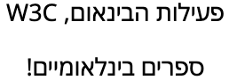

Use cases for bidi and language metadata on the Web
The W3C Internationalisation Working Group recommends that data formats and string data are always associated with information about text direction and language. This is to ensure that the data can be correctly managed when displayed to a user. This article explores use cases that substantiate the need for this type of information.
Examples
E-book catalogue
Suppose that you are building a Web page to show a
customer's library of e-books. The e-books exist in a catalog of data
and consist of the usual data values. A JSON file for a single entry
might look something like:
{ "id": "123-4-56789-0",
"title": "HTML و CSS: تصميم و إنشاء مواقع الويب",
"authors": [ "Jon Duckett" ],
"language": "ar",
"pubDate": "2008-01-01",
"publisher": "مكتبة",
"coverImage": "https://example.com/images/html_and_css_cover.jpg",
// etc.
},
{ "id": "098-7-65432-1",
"title": "Easy as one שתיים three",
"authors": [ "פעילות הבינאום, W3C" ],
"language": ["en", "he"],
"pubDate": "2006-01-01",
"publisher": "ספרים בינלאומיים!",
"coverImage": "https://example.com/images/easy_123_cover.jpg",
// etc.
},
An example of data containing strings that need direction and language metadata.
Each of the above is a data field in a database somewhere. Note that the language information provided ("language": "ar") indicates the language of the book, not the language of the text in the database record.
A well-internationalized catalog would include additional metadata
to what is shown above. That is, for each of the fields containing
natural language text, such as the title and
authors fields, there should be language and base
direction information stored as metadata. (There may be other values as well, such
as pronunciation metadata for sorting East Asian language information.)
These metadata values are used by consumers of the data to influence the processing
and enable the display of the items in a variety of ways. As the JSON data structure
provides no place to store or exchange these values, it is more difficult
to construct internationalized applications.
Annotated manuscripts
Kitayama-san is reading an old Tibetan manuscript from the Dunhuang
collection. The tool he is using to read the manuscript has access
to annotations created by scholars who are commenting on the
text, and who are working in the various languages
of the International Dunhuang Project.
The section of the manuscript he is currently looking at has
commentaries by people writing in Chinese, Japanese, and Russian.
Each of these commentaries is stored in a separate annotation, but
the annotations point to the same point in the target document.
Each commentary is mainly written in the language of the scholar,
but may contain excerpts from the manuscript and other sources
written in Tibetan, as well as quoted text in Chinese and English. Some
commentaries may contain parallel annotations, each in a different
language. For example, there are some with the same text translated
into Japanese, Chinese and Tibetan.
Kitayama-san speaks Japanese, so he generally wants to be presented with the
Japanese commentary.
Definitions
Language metadata typically indicates the
intended linguistic audience or user of the resource as a whole, and
it's possible to imagine that this could, for a multilingual resource,
involve a property value that is a list of languages. A property that
is about language metadata may have more than one value, since it aims
to describe all potential users of the information
The text-processing language is the language of a
particular range of text (which could be a whole resource or just part
of it). A property that represents the text-processing language needs
to have a single value, because it describes the text content in such a
way that tools such as spell-checkers, default font applicators,
hyphenation and line breakers, case converters, voice browsers, and
other language-sensitive applications know which set of rules or
resources to apply to a specific range of text. Such applications
generally need an unambiguous statement about the language they are
working on.
Base direction determines the general arrangement and progression of content when bidirectional text is displayed. The Unicode Bidirectional Algorithm (UBA) is primarily focused on arranging adjacent characters, based on character properties. Base direction works at a higher level, and dictates (a) the visual order and direction in which runs of strongly-typed LTR and RTL character are displayed, and (b) where there are weakly-typed characters such as punctuation, the placement of those items relative to the other content.
Language negotiation is any process which selects or filters content based on language. Usually this implies selecting content in a single language (or falling back to some meaningful default language that is available) by finding the best matching values when several languages or locales are present in the content. Some common language negotiation algorithms include the Lookup algorithm in BCP47 or the BestFitMatcher in ECMA-402.
Identifying the Language of Content
Capturing the language of the audience
Kitayama-san wants to find manuscript annotations in Japanese (see the example above).
The annotations containing the Japanese commentary have a language property set to "ja" (Japanese). The tool he is using knows that he wants to read the Japanese commentaries, and it uses the metadata attached to the annotations to select and present to him the text that is available in Japanese. This is language information being used as metadata about the intended audience – it indicates to the application doing the retrieval that the intended consumer of the information is someone who wants Japanese content.
Some of the annotations contain text in more than one language.
For example, there are several with commentary in Chinese, Japanese,
and Tibetan. For these annotations, it's appropriate to set the
language property to
"ja,zh,bo" –
indicating that all of Japanese, Chinese, and Tibetan readers may want to find
it.
The language tagging that is happening here is likely to
be at the resource level, rather than the string level.
Capturing the text-processing language
Having identified the relevant annotation text to present to
Kitayama-san, his application has to then display it so that he can read it.
It's important to apply the correct font to the text. In the figure just below, the first line is labeled ja
(Japanese), and the second zh-Hant (Traditional
Chinese), respectively. The characters on both lines are the same code points, but the reader expects to see systematic differences between how those codepoints are rendered in Japanese vs. Chinese. It's important to associate the right forms with the right language, otherwise you can make the reader uncomfortable or possibly unhappy.
The same code points, displayed with a Japanese (top) and Chinese (bottom) font. (View codepoints.)
So, it's important to apply a Japanese font to
the Japanese text that Kitayama-san is reading. There are also
language-specific differences in the way text is wrapped at the end
of a line. For these reasons we need to identify the actual
language of the text to which the font or the wrapping algorithm
will be applied.
Another consideration that might apply is the use of
text-to-speech. A voice browser will need to know whether to use
Japanese or Chinese pronunciations, voices, and dictionaries for the ideographic characters
contained in the annotation body text.
Various other text rendering or analysis tools need to know
the language of the text they are dealing with. Many different types of text processing depend on information about the language of the content in order to provide the proper processing or results and this goes beyond mere presentation of the text. For example, if Kitayama-san wanted to search for an annotation, the application might provide a full text search capability. In order to index the words in the annotations, the application would need to split the text according to word boundaries. In Japanese and Chinese, which do not use spaces in-between words, this often involves using dictionaries and heuristics that are language specific.
We also need a way to indicate the change of language to Chinese and
Tibetan later in the commentary for some annotations, so that
appropriate fonts and wrapping algorithms can be applied there.
It's
possible that the text-processing language for strings
inside the resource may be assumed by looking at the resource level
language tag we mentioned earlier, which indicates the target audience – but only if it is a single language tag. If the tag
contains "ja,zh,bo" it's not clear which parts of the text should be treated as if they are in
Japanese, which are in Chinese, and which are in Tibetan. Therefore, there is a need for additional metadata to indicate the text-processing language to be used for which parts of the text, ideally with a resource-wide declaration as the default and the ability to change the language for appropriate parts of the content.
Inline language changes
Changes of language may occur within sentences (or strings in our publishing manifest example), and these changes are also important if we are to apply the correct fonts and styling. There must be some way to indicate where the new text-processing language segment begins and ends.
Additional Requirements for Localization
Having viewed the commentaries he is interested in, Kitayama-san realizes that he needs another reference work, but he's not sure of the catalog number. He uses an application for searching out catalog entries. This application is written in JavaScript and can be switched between several languages, according to the user preference. One way to accomplish this would be to reload the application's user interface from the server each time the user selects a new language. However, because this application is relatively small, the developer has elected to package all of the translations with the JavaScript (there are several open source projects that allow runtime selection of locale). Similarly, the catalog search service sends records back in all of the available languages, rather than pre-selecting according to the user's current language preference.
The e-book catalog example shows a data record available in a single language. But some applications, such as the catalog search tool and its supporting service, might need the ability to send multiple languages for the same field, such as when localizing an application or when multilingual data is available. This is particularly true in cases like this, when the application performs its own language negotiation or when the consumer cannot know which language or languages will be selected for display.
Serialization agreements to support this therefore need to represent several different language variations of the same field. For instance, in the e-book example above the values title or description might each have translations available for display to users who speak a language other than English. Or an application might have localized strings that the consumer can select at runtime. In some cases, all language variations might be shown to the user. In other cases, the different language values might be matched to user preferences as part of language negotiation to select the most appropriate language to show.
When multiple language representations are possible, a serialization might provide a means (defined in the specification for that document format) for setting a default value for language or direction for the whole of the document. This allows the serialized document to omit language and direction metadata from individual fields in cases where they match the default.
Identifying the Base Direction of Content
In order for an application to correctly display bidirectional text, such as in the following use cases, there must be a way for the consumer to determine the required base direction for each string. It is not enough to rely on the Unicode Bidirectional Algorithm to solve these issues. What is needed is a way to establish the overall directional context in which the string will be displayed (which is what 'base direction' means).
If you are new to RTL text and the Unicode Bidirectional Algorithm you may find it useful to start with this easy introduction.
These use cases illustrate situations where a failure to apply the necessary base direction creates a problem. Most of these examples are about getting things to appear in the right place.
Punctuation and basic directional run placement
The eBook Catalog example above shows an entry for a Hebrew book. Here are the strings that represent the names of the publisher and author, respectively, shown as you would expect to see them written.

The names (top) of the publisher (International Books!) and (bottom) of the author (W3C Internationalization Activity). (View codepoints.)
These strings are picked up and inserted into a page that describes the book. There is both an English (LTR) and Hebrew (RTL) version of the page.
Drop these strings into a RTL Hebrew context, as shown in the figure below, and they will look fine.
The author and publisher names inserted into a RTL page. (View codepoints.)
However, drop it into an English LTR page, and the exclamation mark and word 'W3C' will end up in the wrong place. They are part of the imported string, and should be displayed to the left.
The author and publisher names inserted into a LTR page with no direction information. (View codepoints.)
The Hebrew characters are automatically displayed right-to-left by applying the Unicode Bidirectional Algorithm (UBA). However, the UBA cannot make the exclamation mark or Latin text appear where it belongs, unless the base direction is set to RTL around the inserted string.
To achieve this in a LTR context when using HTML insert the string into an element with a dir attribute that has the value rtl. That yields the expected result:
The author and publisher names as they should appear when inserted into a LTR page. (View codepoints.)
Alternatively, you could insert the string into an element with dir set to auto, or into a bdi element. In either case, the browser will automatically apply the RTL direction to the string by looking up the direction of the first strong directional character in the string
Managing multiple directional runs
When the opposite direction text is neither at the start nor the end, but is in the middle of a string, the results can be even more confusing.
The title of the Hebrew book is shown here as you would expect to read it. In this case the string contains three directional runs.
The name of the Hebrew book in the eBook Catalog. (View codepoints.)
If the string is dropped into an English (LTR) document, it will display as expected.
The book title inserted into an English page with no directional information for the display of the string. (View codepoints.)
Dropped into a Hebrew (RTL) page, without stipulating the base direction for the string, the order of the items will change, and begin to be unreadable or misleading.
The book title inserted into a Hebrew page with no directional information for the display of the string. (View codepoints.)
If a bidirectional string is inserted into a LTR context without specifying the RTL base direction for the inserted string, it can produce unreadable text. This is an example.
The larger the number of directional runs in the string, the harder it becomes to understand the text.
A string with 4 directional runs inserted into a LTR context as it should appear (top), and as it will appear (bottom) without base direction adjustments. (View codepoints.)
This can be worse still when combined with punctuation, or in this case markup. Take the following example of source code, presented to a user in an educational context in a RTL page: <span>one שתיים three</span>. If the base direction of the string is not specified as LTR, you will see the result below.
one שתיים three</span>" data-notes="27px Noto Sans Hebrew + Noto Sans">
An example of HTML markup displayed in a Hebrew page without base direction changes. (View codepoints.)
(This happens because the Unicode bidi algorithm sees span>one as a single directional run, and three</span as another. The outermost angle brackets are balanced by the algorithm.)
Problems with initial Latin text in RTL strings
This is how the title of the book in the first part of the eBook Catalog example should be written. The words 'HTML' and 'CSS' should be read first, and in that order, at the start of the title.
The name of the book in the Arabic example in the eBook Catalog (HTML and CSS: Website Design and Creation). (View codepoints.)
As we saw in the previous section, a browser can test the first strong character in the string in order to guess the base direction that needs to be applied. In this case, that heuristic will produce the wrong result.
The name of the book in the Arabic example of the eBook Catalog with no directional information for the display of the string. (View codepoints.)
The heuristics work most of the time, but for cases like this, or others, such as where a Latin hash tag or @name appears at the start of a tweet, the heuristics will produce the wrong result. What's needed here is some information that is stored alongside the string to indicate what its true directionality should be when displayed.
Neutral LTR text
The text in this use case could be a phone number, product catalogue number, MAC address, etc. Or it could be an ISBN number in the eBook Catalog example.
Dropped into an RTL context when preceded by Arabic text, you will get the result just below, which is incorrect – the sequencing is wrong, and this may not even be apparent to the reader, who will expect to read such numbers from left to right:
The ISBN number displayed in an Arabic page without care taken over the change in base direction. (View codepoints.)
There are no strong directional characters in this string, and so nothing to indicate the expected direction when displayed.
In fact, the need to preserve a strong LTR base direction has more to do with the type of information in the string than with the character content. Things like ranges and mathematical expressions are expected to be read from right to left in Arabic (although the numbers themselves still run LTR). Also, different separators produce different ordering. The directional information may be needed to indicate what type of data this is.
Spill-over effects
Continuing with our common use case for strings to provide data that is inserted into a page or user interface at runtime, consider a scenario where, in a LTR page, you are displaying book names and the number of reviews each book has received. The display should produce something ordered like this:
Code to show the number of reviews for a given title.
When you insert a book with a title in Arabic, you would expect to see this:
Title of a book on the left, number of reviews on the right. (View codepoints.)
What you would actually see is this:
Items are incorrectly ordered if directional isolation is not applied. (View codepoints.)
This problem is caused by spillover effects as the Unicode bidirectional algorithm operates on the text inside and outside the inserted string without making any distinction between the two.
The solution to this problem is bidi isolation. The title needs to be directionally isolated from the rest of the text.
Interpreting HTML markup
In this use case, the string to be displayed contains markup.
one שתיים three</span>" data-notes="27px Noto Sans Hebrew + Noto Sans">
A string containing HTML markup. (View codepoints.)
Unlike the previous example, where the markup was displayed to the reader, in this case there is an expectation that the markup will be parsed and added to the DOM when the string is inserted into a page. This is a way of indicating the appropriate base direction for the string, using the dir attribute.
Such an approach relies, however, on a process where the consumer expects to receive HTML, and knows how to handle bidi markup. It also requires the producer to take explicit action to identify the appropriate base direction and set up the required markup to indicate that.
What consumers of strings need to do
Given the use cases in this section it will be clear that a consumer of strings or database content cannot simply insert a string into a target location without some additional work or preparation taking place, first to establish the appropriate base direction for the string being inserted, and secondly to apply bidi isolation around the string.
This requires the presence of markup or Unicode formatting controls around the string. If the string's base direction is opposite to that into which it is being inserted, the markup or control codes need to tightly wrap the string. Strings that are inserted adjacent to each other all need to be individually wrapped in order to avoid the spillover issues we saw in the previous section.
HTML5 provides base direction controls and isolation for any inline element when the dir attribute is used, or when the bdi element is used. When inserting strings into plain text environments, isolating Unicode formatting characters need to be used.
In most cases, heuristics can be used to determine the directionality of the string. However, there are cases where the heuristics fail, and in those cases there needs to be a way of storing and communicating the appropriate base direction of the string.
For another set of use cases, focusing on how to achieve correct rendering of strings inserted into an HTML page, see the article Strings and bidi.
In-string direction changes
In all of the examples we have seen so far, we have seen a need to identify the direction of the string as a whole. The base direction we have been concerned with establishes an overall directional context which causes the string to be rendered as expected.
In fact, strings may also contain internal sequences of characters for which a different base direction has to be applied. In such cases, there needs to be a way to indicate the start and end of those fragments.
Summary
In summary, when content and strings are stored in databases there needs to be some way of identifying the language and direction that they should be associated with. Some of those properties may relate to who is likely to use the information, and some is relevant to making the information appear or behave correctly when presented to the user. This information needs to be available both at the resource level, but also cater for changes within the content, including changes on an item by item basis, but also changes within a string or sentence.